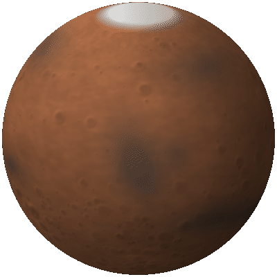

Mars — the fourth planet from the Sun — is a dusty, cold, desert world with a very thin atmosphere. This dynamic planet has seasons, polar ice caps, extinct volcanoes, canyons, and weather.
Mars is one of the most explored bodies in our solar system, and it's the only planet where we've sent rovers to roam the alien landscape. NASA missions have found lots of evidence that Mars was much wetter and warmer, with a thicker atmosphere, billions of years ago.
Namesake
Mars was named by the ancient Romans for their god of war, because its reddish color was reminiscent of blood. Other civilizations also named the planet for this attribute; the Egyptians, for example, called it Her Desher, meaning "the red one." Even today it is frequently called the Red Planet, because iron minerals in the Martian dirt oxidize, or rust, causing the surface to look red.
Potential for life
Scientists do not expect to find living things currently thriving on Mars. Instead, they are looking for signs of life that existed long ago, when Mars was warmer and covered with water.
Size and distance
With a radius of 2,106 miles (3,390 kilometers), Mars is about half the size of Earth. If Earth were the size of a nickel, Mars would be about as big as a raspberry.
From an average distance of 142 million miles (228 million kilometers), Mars is 1.5 astronomical units away from the Sun. One astronomical unit is the distance from the Sun to Earth. From this distance, it takes sunlight 13 minutes to travel from the Sun to Mars.
Orbit and rotation
As Mars orbits the Sun, it completes one rotation every 24.6 hours, very similar to one day on Earth at 23.9 hours. Martian days are called sols, short for solar day. A year on Mars lasts 669.6 sols, the same as 687 Earth days.
Mars' axis of rotation is tilted 25 degrees with respect to the plane of its orbit around the Sun — another similarity with Earth, which has an axial tilt of 23.4 degrees. Like Earth, Mars has distinct seasons, but they last longer than seasons here since Mars takes longer to orbit the Sun. And while on Earth the seasons are evenly spread over the year, each lasting three months, on Mars the seasons vary in length because of the planet's elliptical, egg-shaped orbit.
Spring in the northern hemisphere, which is autumn in the southern, is the longest season at 194 sols. Autumn in the north, spring in the south, is the shortest at 142 sols. Northern winter and southern summer runs 154 sols, and northern summer with southern winter runs 178 sols.
Moons
Mars has two small moons, Phobos and Deimos, that may be captured asteroids. They are potato-shaped because they have too little mass for gravity to make them spherical.
The moons get their names from the horses that pulled the chariot of the Greek god of war, Ares, whose Roman counterpart is Mars. Phobos, the innermost and larger moon, is heavily cratered, with deep grooves on its surface. It is slowly moving toward Mars and will crash into the planet or break apart in about 50 million years.
Deimos is about half as big as Phobos and orbits two and a half times farther away from Mars. Oddly shaped Deimos is covered in loose dirt that often fills the craters on its surface, making it appear smoother than pockmarked Phobos.
Rings
Mars has no rings. However, in 50 million years, when Phobos crashes into Mars or breaks apart, it could create a dusty ring around the Red Planet.
Formation
When the solar system settled into its current layout about 4.5 billion years ago, Mars formed as gravity pulled swirling gas and dust in to become the fourth planet from the Sun. Mars is about half the size of Earth, and like its fellow terrestrial planets it has a central core, a rocky mantle, and a solid crust.
Structure
Mars has a dense core at its center, between 930 and 1,300 miles (1,500 to 2,100 kilometers) in radius, made of iron, nickel, and sulfur. Surrounding the core is a rocky mantle between 770 and 1,170 miles (1,240 to 1,880 kilometers) thick, and above that a crust made of iron, magnesium, aluminum, calcium, and potassium. This crust is between 6 and 30 miles (10 to 50 kilometers) deep.
Surface
The Red Planet is actually many colors. At the surface we see colors such as brown, gold, and tan. The reason Mars looks reddish is the oxidization, or rusting, of iron in the rocks, regolith — Martian soil — and dust. This dust gets kicked up into the atmosphere, and from a distance makes the planet appear mostly red.
While Mars is about half the diameter of Earth, its surface has nearly the same area as Earth's dry land. Its volcanoes, impact craters, crustal movement, and atmospheric conditions such as dust storms have altered the landscape over many years, creating some of the solar system's most interesting topographical features.
A very large canyon
A vast canyon system called Valles Marineris is long enough to stretch from California to New York. This Martian canyon, the largest in the solar system, extends about 2,400 miles (3,870 kilometers) in length, spans about 370 miles (600 kilometers) across at its widest, and descends about 5.8 miles (9.3 kilometers) at its deepest, from the rim to the canyon floor. That is more than 10 times longer and wider than Earth's Grand Canyon.
The largest volcano
Mars is home to the largest volcano in the solar system, Olympus Mons. It dwarfs Earth's highest peak, Mount Everest, which rises 29,029 feet (8,848 meters) above the Earth's surface. Olympus Mons stands more than 25 miles tall from base to summit — more than 132,000 feet, or 40 kilometers — with the base covering an area as large as the state of Arizona.
Water on Mars
Mars appears to have had a watery past, with ancient river valley networks, deltas, and lakebeds, as well as rocks and minerals on the surface that could only have formed in liquid water. Some features suggest that Mars experienced huge floods about 3.5 billion years ago.
There is water on Mars today, but the Martian atmosphere is too thin for liquid water to exist for long on the surface. Today, water on Mars is found as water ice just under the surface in the polar regions, and as briny, salty water that seasonally flows down some hillsides and crater walls.
Atmosphere
Mars has a thin atmosphere made up mostly of carbon dioxide, nitrogen, and argon gases. To our eyes the sky would be hazy and red because of suspended dust, instead of the familiar blue tint we see on Earth. Mars' sparse atmosphere does not offer much protection from impacts by objects such as meteorites, asteroids, and comets.
The temperature on Mars can be as high as 70 degrees Fahrenheit (20 degrees Celsius) or as low as about minus 225 degrees Fahrenheit (minus 153 degrees Celsius). Because the atmosphere is so thin, heat from the Sun easily escapes the planet. If you were to stand on the surface of Mars at the equator at noon, it would feel like spring at your feet, 75 degrees Fahrenheit (24 degrees Celsius), and winter at your head, 32 degrees Fahrenheit (0 degrees Celsius).
Occasionally, winds on Mars are strong enough to create dust storms that cover much of the planet. After such storms it can be months before all of the dust settles.
Magnetosphere
Mars has no global magnetic field today, but areas of the Martian crust in the southern hemisphere are highly magnetized, indicating traces of a magnetic field from 4 billion years ago.